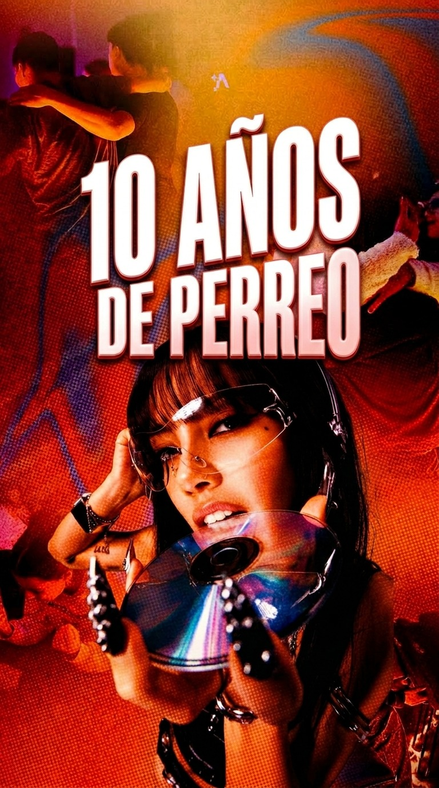

Creator NetworkEl canje no es un regalo.
El canje no es un regalo.
Es presupuesto de activación.
Mesas, covers y bebidas pueden convertirse en contenido, alcance y prueba social si seleccionamos perfiles correctos y medimos lo que producen.

Cómo funcionaría
Scouting → brief → experiencia → contenido → medición.
- Seleccionamos microcreadores por afinidad, no solo por seguidores.
- Priorizamos nightlife, lifestyle, música, humor y cultura urbana.
- Definimos entregables antes del canje.
- Asignamos link, código o CTA rastreable.
- Medimos contenido, clics, conversaciones y reservas cuando sea posible.
Qué evaluamos
Un creador útil no siempre es el más grande.
La selección cruza audiencia, tono, calidad de contenido y capacidad de mover comportamiento.
Afinidad
¿Su audiencia encaja con el público de Presea y su consumo de entretenimiento?
Contenido
¿Puede contar una noche de forma natural sin parecer un anuncio barato?
Engagement
¿La comunidad responde, comenta y comparte?
Conversión
¿Genera clics, preguntas o uso de códigos?
Costo/canje
¿La inversión en experiencia tiene sentido frente al resultado?
Reutilización
¿El contenido puede amplificarse desde las cuentas de Presea?